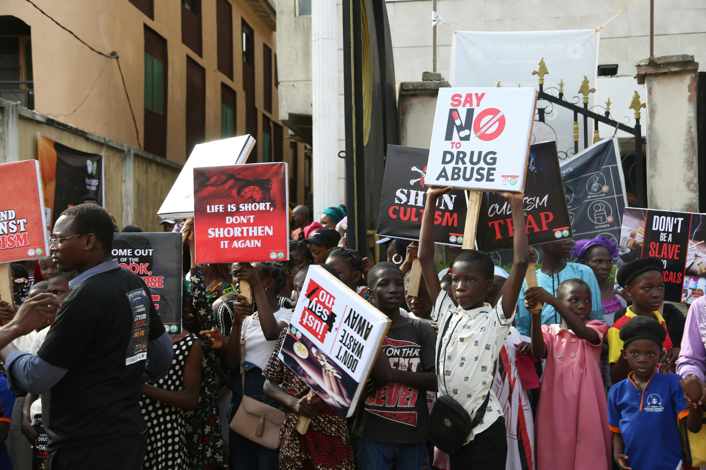

Dangers of Drug Abuse
- Mental Health Conditions
- Stroke
- Cancer
- Depression

Campaign Against Drug Abuse
There are several dangers of drug abuse. But first of all, what is drug and drug abuse?
Drug is a chemical substance, excluding nutrients and essential dietary ingredients, that produces a biological effect when introduced into a living organism.
Drug Abuse or substance misuse, occurs when someone uses a drug in amounts or ways that are harmful to themselves or others, often to alter their mood or feel better, rather than for a legitimate health reason.
Fun, meaningful options to build skills, friendships, and resilience — great substitutes for experimenting with drugs.
Playing football, basketball, martial arts, or even going for a run helps boost mood, health, and teamwork skills.
Build games, apps or websites. Coding teaches problem-solving and can lead to scholarships or paid gigs.
Helping at shelters, tutoring, or organizing local events builds a sense of purpose and connection.
Learning an instrument, singing, dancing, or acting allows for self-expression and builds confidence.
Joining a book club, journaling, or writing stories expands imagination and helps process emotions.
“I chose football instead of drugs, and it changed my life.” – David, 17
“Music gave me a purpose, and I never looked back at drugs.” – Sarah, 19
“Volunteering opened my eyes to a brighter future without drugs.” – Michael, 20